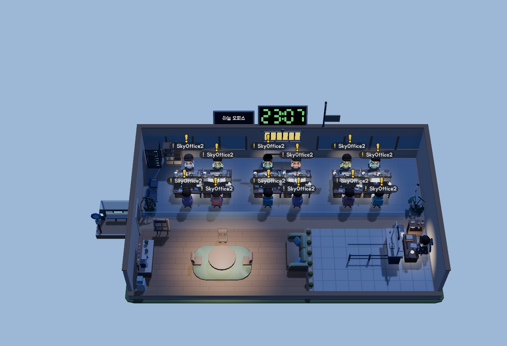
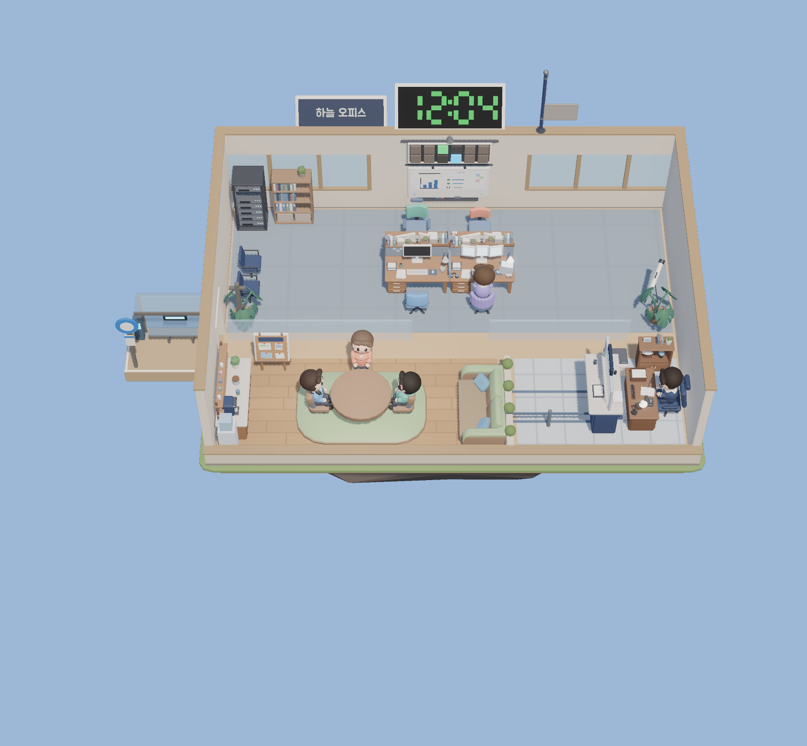
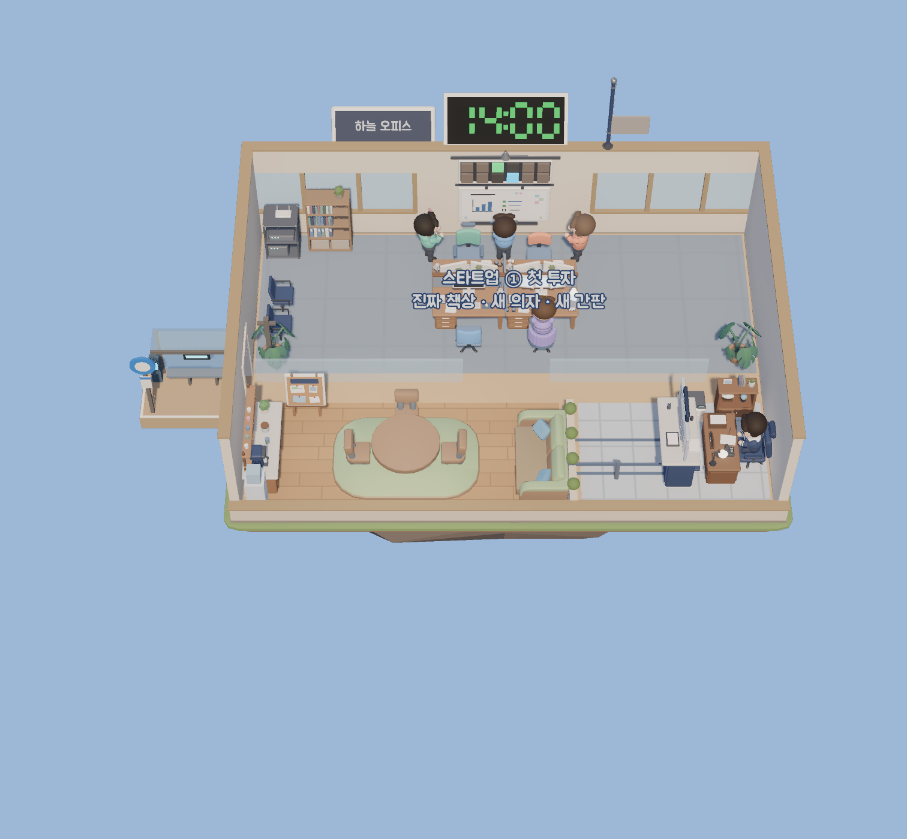
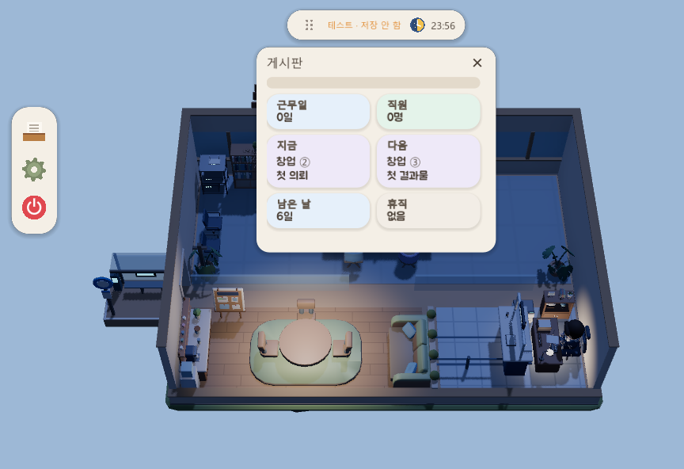
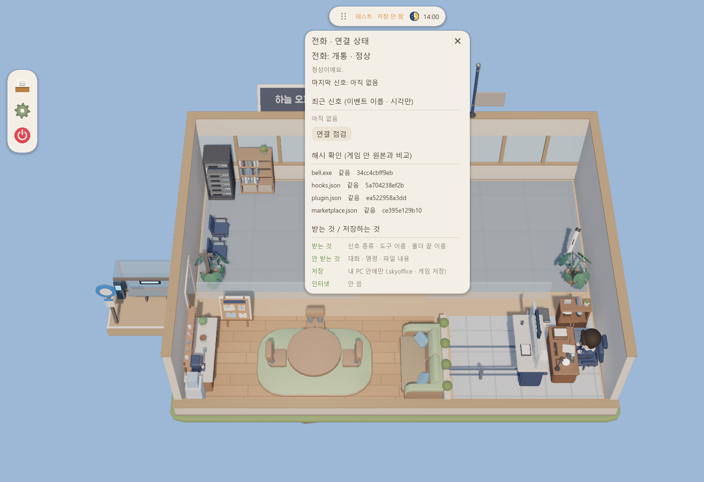

이런 게임이에요
Claude Code 세션 하나가 직원 한 명이에요.
일을 시키면 일해요
직원이 책상에서 일하고, 끝나면 기지개를 켜고 쉬어요.
내 차례엔 노란 알림
허락 · 질문이 오면 직원 머리 위에 노란 느낌표가 떠요. 노랑은 오직 “내 차례”예요.
회사가 자라요
근무일이 쌓이면 창업에서 대기업까지 사무실이 커져요.
화면
낮과 밤, 점심시간, 회사 성장까지.




기능
호출 보드 · 봉투
서브에이전트가 끝나면 봉투가 날아와요. 명패에 마우스를 올리면 직무와 하는 일 한 줄.
분업
책상 직원은 PM, 일하는 서브에이전트는 전문가 손님이에요. 역할 이름만 받고 지침서는 읽지 않아요.
18단계 성장
창업 → 스타트업 → 중소기업 → 유니콘 → 중견기업 → 대기업. 책상 6 → 8 → 10 → 12.
새 가구 · 공간
탕비 코너, 라운지 + 카페, 유리 사장실, 서버 랙, 전문가석, 트로피 진열장까지.
사무실 고양이
침대 · 밥그릇 · 잠 · 산책 · 쓰다듬기 (단계 64).
프로젝트 완료
사장실 명예의 벽에 기념 액자. 프로젝트 이름은 저장하지 않아요.
도구별 장소 이동
같은 도구를 3번 쓰면 책장 · 서버 랙 · 망원경 · 화이트보드 앞으로 가요.
다른 도구
Codex ◆ · Antigravity ▲ 직원도 관찰 모드로 보여요. 게임이 설정 파일을 직접 고치지 않아요.
하루 · 조용히 모드
하루 = Claude 5시간 창(낮 → 밤). 합성 환경음, 조용히 모드, 자동 업데이트.
선택 기능 · 기본 꺼짐: 게임에서 Claude 부르기
설정 → 회사 탭에서 켜면 사장 책상 전화 패널에서 직원 있는 프로젝트 하나에 한 줄을 보낼 수 있어요.
게임이 내 PC 의 claude.exe 를 한 번 실행해요. 토큰이 쓰여요. 보낼 때마다 확인 카드가 뜨고, 그 폴더 파일을 읽기만 해요 (최대 5턴 · $0.50 · 120초). 명령과 답은 저장하지 않아요.
설치 · 연결 · 제거
연결은 선택이고, 약 1분이면 돼요.
- 받기 — 위의 릴리스에서
SkyOffice-버전-windows-x64.zip→ 모두 압축 풀기 - 켜기 —
SkyOffice.exe두 번 클릭 → 회사 이름 정하기 - 연결 (선택) — 사장 책상의 전화기 → [개통하기] → 하늘색 불이 들어오면 끝
claude 명령을 못 찾았어요→ [명령 복사] → Claude Code 를 쓰는 PowerShell 에 붙여 넣고 Enter. 열려 있던 Claude Code 는 껐다 다시 켜세요. - 확인 — Claude Code 에서 아무 일이나 시키면 직원이 움직여요
- 제거 — 설정 → 회사 → 맨 아래 폐업 정리 (플러그인 · 저장 · 자동 실행 삭제) → 게임 폴더는 직접 삭제
개통 전에는 관찰 모드로 동작해요. Claude Code 기록 파일의 수정 시각만 봐요.
| 전화기 | 뜻 |
|---|---|
| 회색 불 | 미개통 (관찰 모드) |
| 하늘색 불 | 개통 · 정상 |
| 수화기 내려감 + X | 불통 — 전화기를 누르면 원인 1줄 |
개인정보 · 안전
게임에는 승인 버튼이 없어요. 허락은 늘 터미널에서 해요.

| 받는 것 | 신호 종류 · 도구 이름 · 폴더 끝 이름 · 모델 이름 (Codex 훅) |
|---|---|
| 안 받는 것 | 프롬프트 · 명령 · 파일 내용 · 대화 · 오류 문장 · 환경 변수 |
| 저장 | 내 PC 안에만 (%USERPROFILE%\.skyoffice · %APPDATA%\SkyOffice) |
| 인터넷 | 안 써요 (게임은 업데이트 확인만) |
훅 12개 모두 출력 없음 · 결정 권한 없음. 켤 때마다 설치 파일 4개의 SHA-256 을 게임 안 원본과 비교하고, 다르면 불통 + 신호 처리 중단이에요. 소스와 해시는 README 에 있어요.
직접 개통 / 제거 (PowerShell)
claude plugin marketplace add "$env:USERPROFILE\.skyoffice\plugin\0.2.0"
claude plugin install skyoffice-bell@skyoffice --scope user
claude plugin uninstall skyoffice-bell@skyoffice
claude plugin marketplace remove skyoffice문제 해결
| 증상 | 해결 |
|---|---|
| 개통했는데 불이 안 들어옴 | Claude Code 를 다시 켜고 일을 하나 시키기 |
| 불통 “신호가 안 와요” | Claude Code 다시 켜기 → 전화기 [연결 점검] |
| 불통 “파일이 바뀌었어요” | 전화기 → [개통하기] 로 다시 개통 |
그래도 안 되면 Issues 에 알려 주세요.
앞으로
다음 버전 목표
캐릭터 새 모델(뜨개 질감) · 새 배경음악
연출
망원경 연출 · 부두 벤치 · 창밖 연출
검토 중 미정
Gemini/Antigravity 훅 연동 · 게임 안 명령 쓰기 권한